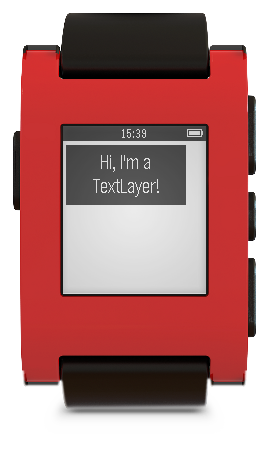

Layer that displays and formats a text string.
 The geometric information (bounds, frame) of the Layer is used as the "box" in which the text is drawn. The TextLayer also has a number of other properties that influence how the text is drawn. Most important of these properties are: a pointer to the string to draw itself, the font, the text color, the background color of the layer, the overflow mode and alignment of the text inside the layer.
Creates a new TextLayer on the heap and initializes it with the default values.
Font: Raster Gothic 14-point Boldface (system font)
Text Alignment: GTextAlignmentLeft
Text color: GColorBlack
Background color: GColorWhite
Clips: true
Hidden: false
Caching: false
The text layer is automatically marked dirty after this operation.
The frame with which to initialze the TextLayer
A pointer to the TextLayer. NULL if the TextLayer could not be created
Destroys a TextLayer previously created by text_layer_create.
Gets the "root" Layer of the text layer, which is the parent for the sub- layers used for its implementation.
Pointer to the TextLayer for which to get the "root" Layer
The "root" Layer of the text layer.
Sets the pointer to the string where the TextLayer is supposed to find the text at a later point in time, when it needs to draw itself.
The string is not copied, so its buffer most likely cannot be stack allocated, but is recommended to be a buffer that is long-lived, at least as long as the TextLayer is part of a visible Layer hierarchy.
The TextLayer of which to set the text
The new text to set onto the TextLayer. This must be a null-terminated and valid UTF-8 string!
Gets the pointer to the string that the TextLayer is using.
The TextLayer for which to get the text
Sets the background color of the bounding box that will be drawn behind the text.
The TextLayer of which to set the background color
The new GColor to set the background to
Sets the color of text that will be drawn.
The TextLayer of which to set the text color
The new GColor to set the text color to
Sets the line break mode of the TextLayer.
The TextLayer of which to set the overflow mode
The new GTextOverflowMode to set
Sets the font of the TextLayer.
The TextLayer of which to set the font
The new GFont for the TextLayer
Sets the alignment of the TextLayer.
The TextLayer of which to set the alignment
The new text alignment for the TextLayer
Enables text flow following the boundaries of the screen and pagination that introduces extra line spacing at page breaks to avoid partially clipped lines for the TextLayer. If the TextLayer is part of a ScrollLayer the ScrollLayer's frame will be used to configure paging.
Make sure the TextLayer is part of the view hierarchy before calling this function. Otherwise it has no effect.
The TextLayer for which to enable text flow and paging
Additional amount of pixels to inset to the inside of the screen for text flow
Restores text flow and paging for the TextLayer to the rectangular defaults.
The TextLayer for which to restore text flow and paging
Calculates the size occupied by the current text of the TextLayer.
the TextLayer for which to calculate the text's size
The size occupied by the current text of the TextLayer
Update the size of the text layer This is a convenience function to update the frame of the TextLayer.
The TextLayer of which to set the size
The new size for the TextLayer
Do you have questions about the Pebble SDK?
Do you need some help understanding something on this page?
You can either take advantage of our awesome developer community and check out the SDK Help forums, or you can send us a message through the website!